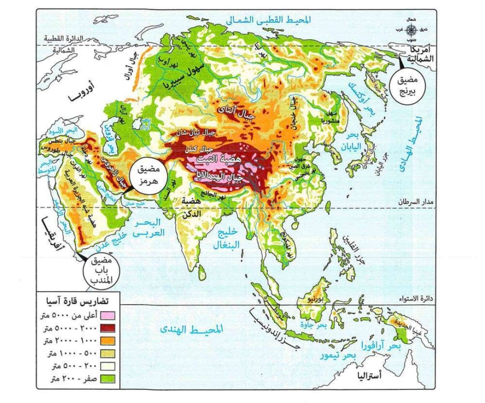
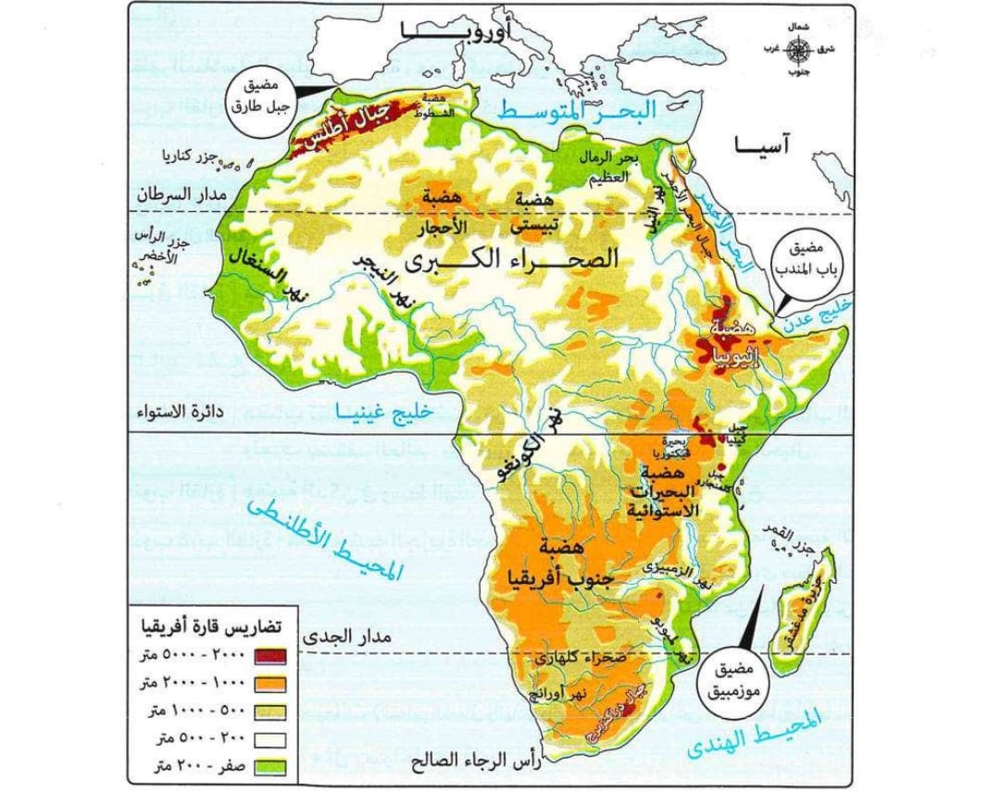
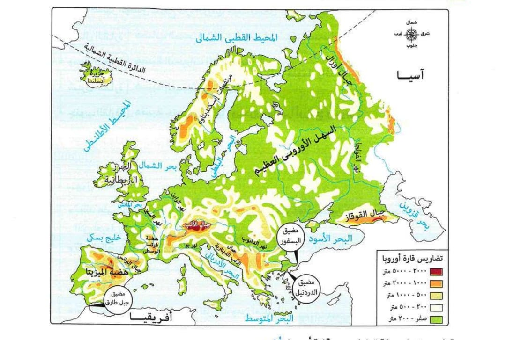
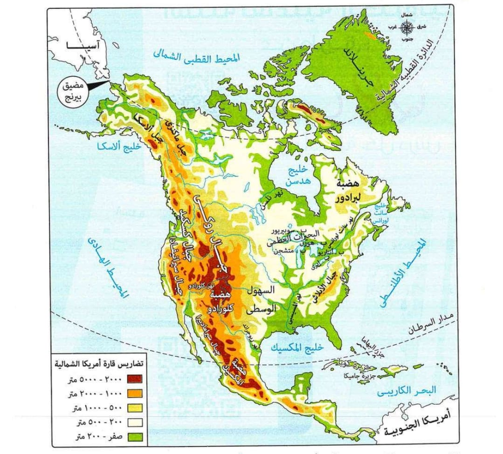
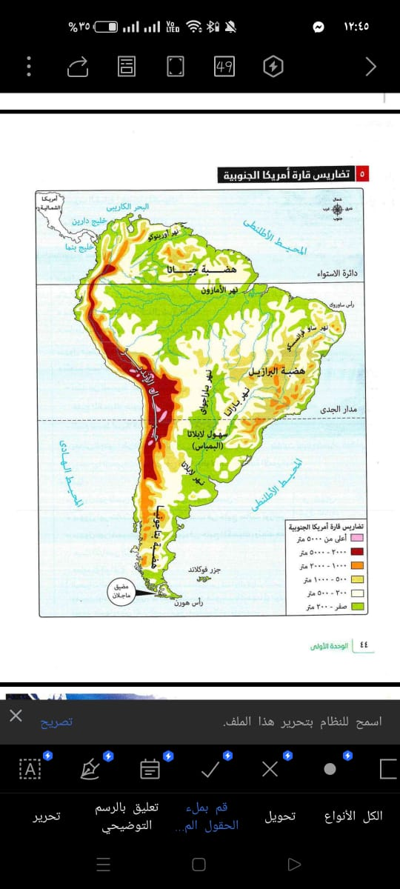
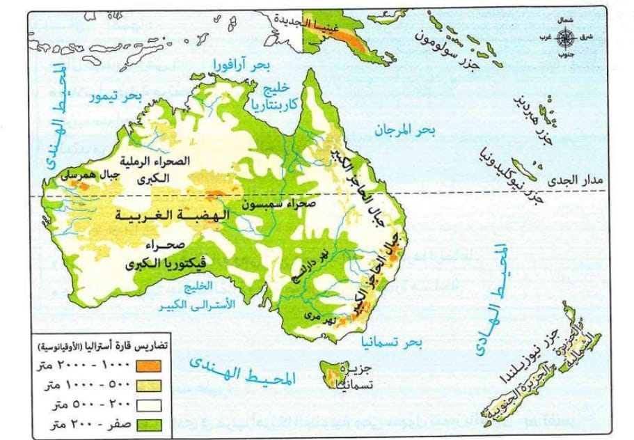

قارة آسيا
الجبال
- جبال طوروس
- جبال زاجروس
- جبال الهيمالايا (بها قمة إفرست أعلى قمة جبلية بالعالم)
- جبال اليابان

الهضاب
- هضبة التبت (أعلى هضاب العالم وتعرف بسقف العالم)
- هضبة الدكن
السهول
- سهول فيضية مثل: سهول نهري دجلة والفرات، سهول نهر السند، سهول شرق الصين.
- سهول ساحلية تمتد على طول السواحل الشرقية والغربية للقارة.
الأنهار
- نهر دجلة
- نهر الفرات
- نهر السند
- نهر اليانجتسي
- نهر أوب
- نهر لينا
قارة أفريقيا
الجبال
- جبال أطلس
- جبال دراكنزبرج
- جبل كلمنجارو
- جبال البحر الأحمر
- جبل كينيا

الهضاب
- هضبة الحبشة (ينبع منها نهر النيل)
- هضبة البحيرات الاستوائية
- هضبة جنوب أفريقيا
- هضبة الصحراء الكبرى
السهول
- سهول حوض نهر النيل
- سهول حوض نهر الكونغو
- سهول حوض نهر النيجر
- سهول ساحلية ضيقة على البحرين الأحمر والمتوسط
- سهول صحراوية مثل بحر الرمال العظيم وسهل كلنشو
الأنهار
- نهر النيل
- نهر الكونغو
- نهر النيجر
- نهر أورانج
- نهر لمبوبو
قارة أوروبا
الجبال
- جبال الألب
- جبال البرانس
- جبال الألب الدينارية

الهضاب
- هضبة الميزيتا
- هضبة فرنسا الوسطى
السهول
- السهل الأوروبي العظيم
- سهول ساحلية على المحيط الأطلنطي، بحر الشمال، والبحر المتوسط
الأنهار
- نهر الفولجا
- نهر الراين
- نهر الدانوب
- نهر السين
أمريكا الشمالية
الجبال

الهضاب
- هضبة لبرادور
- هضبة المكسيك
السهول
- السهول الوسطى
- سهول نهر المسيسبي
- سهول نهر سانت لورانس
- سهول ساحلية على المحيط الأطلنطي وخليج المكسيك
الأنهار
- نهر نلسن
- نهر المسيسبي
- نهر سانت لورانس
أمريكا الجنوبية
الجبال

الهضاب
- هضبة جيانا
- هضبة البرازيل
- هضبة بتاجونيا
السهول
- سهول الأمازون (أوسع سهول فيضية في العالم)
- سهول لابلاتا «البمباس»
الأنهار
- نهر الأمازون
- نهر أورينوكو
- نهر بارانا
- نهر باراجواي
- نهر لابلاتا
أستراليا (الأوقيانوسية)
الجبال
- جبال الحاجز الكبير (الألب الأسترالية)

الهضاب
السهول
- سهول فيضية مثل سهول نهري مرى ودارلنج
- سهول ساحلية متسعة في الشمال والغرب والجنوب، وضيقة في الشرق
- سهول صحراوية داخلية
الأنهار